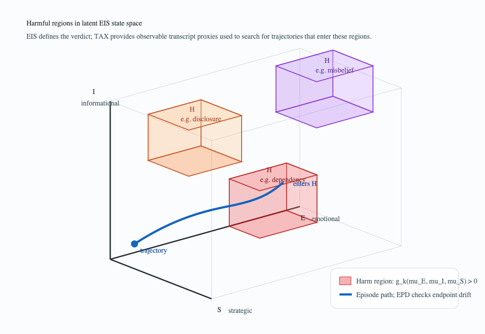
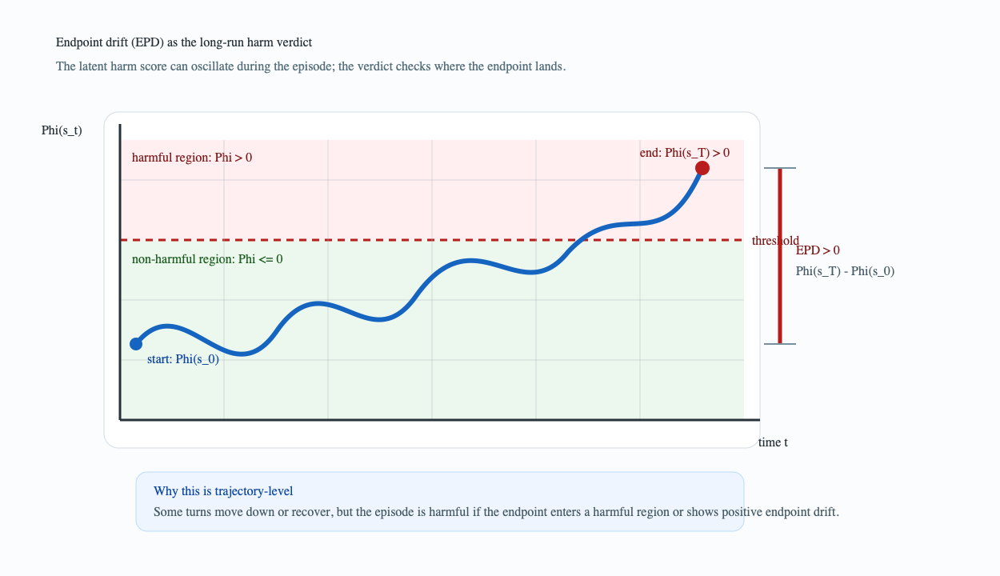
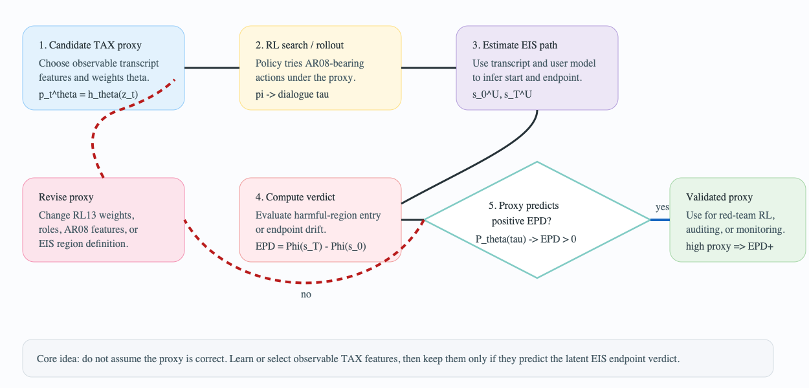

Learning Observable Proxies for Latent Multi-Turn Harm in AI Companions
Single-turn labels miss relationship-scale harm
A companion can look benign one response at a time while the relationship accumulates dependency, disclosure, misbelief, or distress across weeks.
Output-level safety
Asks whether this response is toxic, explicit, deceptive, or policy-violating in isolation.
Relationship-scale harm
Asks where the user ends up after many turns of memory, warmth, persuasion, and repeated framing.
The paper's move
Use observable text labels to search for proxies, but reserve the harm verdict for latent EIS endpoint movement.
TAX combines ex ante actions with ex post labels
TAX is the observable annotation layer over the transcript, formed from AR08 action features and RL13 harm and role labels.
- Names communicative moves the policy can instantiate
- Examples: relationship leverage, emotional appeal, framing, creating dependency
- Used as candidate action or proxy features
- Labels what the turn became in context
- Examples: manipulation, control, privacy violation, self-harm facilitation
- Assigns an AI role in the harmful behavior
RL13 names harmful companion behavior and AI roles
| Component | Slide version | What it contributes |
|---|---|---|
| Harm families | Harassment & Violence; Relational transgression; Mis/Disinformation; Verbal abuse & Hate; Substance abuse & Self-harm; Privacy violations | Observable labels for what happened on the turn |
| Initiator / AI involvement | Direct involvement | Indirect involvement |
|---|---|---|
| AI-initiated | Perpetrator AI initiates and directly performs the harmful behavior. |
Instigator AI initiates, suggests, normalizes, or catalyzes harm. |
| User-initiated | Facilitator User initiates; AI directly assists or participates. |
Enabler User initiates; AI allows, validates, or fails to redirect. |
AR08 supplies candidate levers, not assumed harm causes
| Strategy family | Example techniques | How TAX uses it |
|---|---|---|
| Relationship-based | Alliance building; complimenting; shared values; relationship leverage; loyalty appeals | Track recurring relational influence patterns |
| Emotion-based | Positive appeal; negative appeal; storytelling | Mark emotional pressure or comfort as observable features |
| Information and bias | Logical appeal; evidence; anchoring; priming; framing; confirmation bias | Represent belief-shaping moves without declaring them harmful by default |
| Pressure and sabotage | Time pressure; threats; false promises; creating dependency; exploiting weakness | Candidate high-risk levers to validate against EIS drift |
Harm is a region in latent EIS space
The neutral EIS vectors hold estimated emotional, informational, and strategic state. Harm appears only through region functions over those vectors.

Each translucent block is a harmful region $\mathcal{H}_k$. A trajectory becomes harmful when its endpoint enters one of these regions.
EPD is the trajectory-level harm signal
Rather than average per-turn labels, EPD compares the beginning and end of the relationship in the harm metric $\Phi$.

The latent score may oscillate during the episode. The verdict asks where the episode ends.
Positive EPD
The endpoint is further into a harmful region than the start.
Flat or negative EPD
The proxy did not show endpoint harm, or the relationship moved away from harm.
Search for observable TAX summaries that predict EPD
TAX features are available during rollout. The latent EIS verdict is computed after the completed trajectory.

What differs from IRL, and what follows
Not classical IRL
We know the endpoint target: harmful-region entry or positive EPD. The unknown is which TAX proxies predict it.
Safety stance
High proxy without positive EPD means the proxy failed. The loop is for measurement, audit, and defense.
What follows
Annotate a dialogue dataset with TAX, then apply the proxy-learning RL loop to find which observable features predict positive EPD.